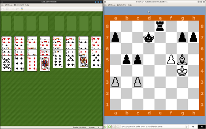
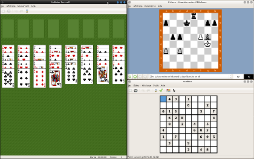
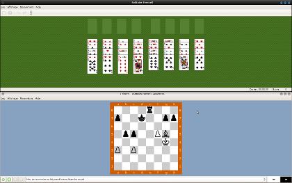
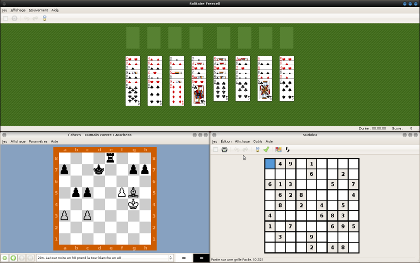

Provides basic functionalities to tile your windows on linux.
Should work with any major desktop environment.
Tiling provides a simple window tiling system for linux. This is for those who cannot (or don't want to) use a tiling window manager like awesome or Xmonad.
There is no menu nor GUI in tiling. This is because I want to keep tiling as simple as possible. You just (optionaly) focus a window and press a keyboard shortcut and that's it: all windows in the current virtual desktop are tiled.
For now tiling provides two layouts: horizontal and vertical, where a «master» window occupy the top, or the left, of the screen, while remaining windows share the rest of the screen.
Tiling 1.0 were released on 2013-03-20. This is the first public release.
Here are some examples of vertical and horizontal tiling:




The Readme file on Github contains all you need to know for installing Tiling.